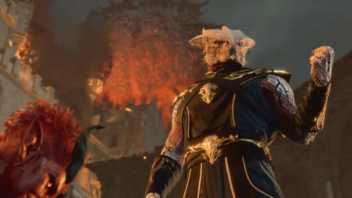

Baldur’s Gate 3 | Atualização adicionará novo final
Postado 04 outubro 2024

A Larian Studios revelou nesta terça-feira (16) mais detalhes do Patch 7 de Baldur’s Gate 3, a próxima grande atualização do jogo.
A atualização promete adicionar melhorias de peso e até conteúdo inédito que afeta a história.
Um dos destaques é a adição de tela dividida ao modo cooperativo local, uma vez que os jogadores não podiam se distanciar. A opção estará disponível no menu e poderá ser ativada (ou desativada) a qualquer momento.
Outra novidade é uma leva de novas cenas que vão adicionar mais um final maléfico à história — incluindo mais momentos para Impulso Sombrio.
“O Patch 7 trará várias cenas novas que adicionam um final ainda mais grandioso às suas jogadas maléficas! Desde Personagens de Origem, incluindo o Impulso Sombrio, até múltiplos caminhos diferentes que você pode seguir com seu personagem, cada nova cena é sua para trilhar descobertas nefastas”, escreveu o estúdio nas notas da atualização no Steam.
O Patch 7 também terá o aguardado kit com ferramentas de mods, que vão possibilitar que os jogadores adicionem suas criações a Baldur’s Gate 3, como mais opções de customização de personagem, visuais de dados, mudanças de interface e por aí vai.
Por fim, a Larian frisa que se trata de uma expansão parruda, então abrirá um beta fechado para quem quiser testar antecipadamente o conteúdo a partir do dia 22 de julho. Para se registrar, basta acessar a página do jogo no Steam e solicitar o acesso. Os participantes serão escolhidos de forma aleatória.
O Patch 7 tem previsão de lançamento para setembro, mas ainda não tem uma data definida.
Baldur’s Gate 3 está disponível para PlayStation 5, Xbox Series X|S e PC.
Voltar